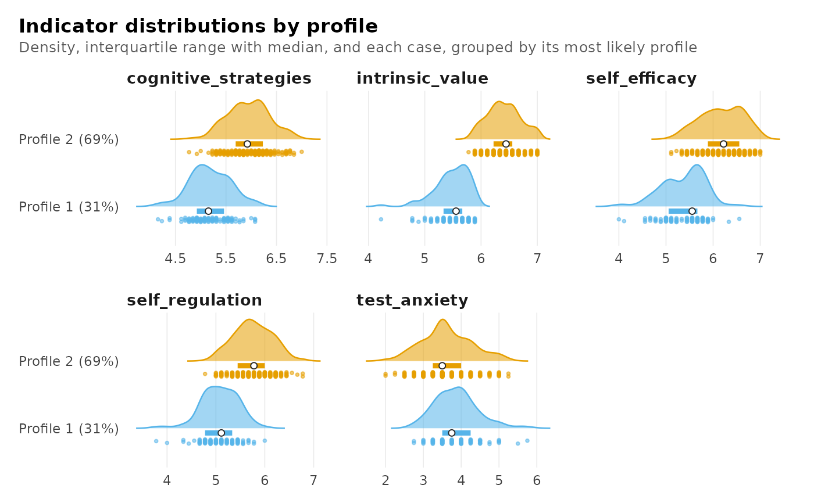

Fit a latent profile model that groups observations by their pattern on continuous indicators
Source:R/lpa.R
lpa.Rdlpa() fits a latent profile model, which describes heterogeneity in
continuous indicators through a specified number of latent profiles. Each
profile represents a pattern of indicator means and within-profile variation,
estimated as a finite mixture of multivariate normal distributions.
By default, indicators are independent within profiles and their variances differ across profiles. Alternative covariance structures allow associations between indicators within profiles and equality constraints across profiles. The fitted model provides profile means, variances, proportions, and posterior membership probabilities for each observation, together with model-fit and classification summaries.
The model treats observations as independent. For observations nested within
groups, use multilpa(). Additional measurement options support mixed
continuous and discrete indicators.
Arguments
- data
A data frame with one row per observation.
- vars
Names of the indicator columns. Numeric columns are continuous indicators; categorical ones are named in
categorical.- n_profiles
Number of profiles; a positive integer.
- ...
Further arguments, passed to
multilpa(), which documents all of them. The ones used most often:variance_model:"varying"(default) gives each profile its own variances;"equal"gives all profiles the same variances.covariance_model:"diagonal"(default) treats the indicators as uncorrelated within a profile;"full"estimates their within-profile covariances.model: the covariance structure as one of mclust's fourteen codes ("EII","VII","EEI","VEI","EVI","VVI","EEE","VEE","EVE","VVE","EEV","VEV","EVV","VVV"), instead ofvariance_modelandcovariance_model. The default structure is"VVI".missing:"error"(default) stops when an indicator has a missing value;"fiml"keeps every row and uses the values it has.categorical,ordinal,count: indicators invarsthat are not continuous.n_starts(default 10) andseed: the number of starts and the seed that makes them reproducible.boundary:"allow"(default) or"exclude", whether a solution with a variance at its lower bound may be reported.prior,noiseandprofile_covariates: a prior on the Gaussian parameters, a noise component for outliers, and covariates that predict profile membership.
idandn_group_classesare not accepted: they belong to the two-level model.
Value
A fitted model of class multilpa, or multilpa_covariates when
profile_covariates is given. Printing it shows the log likelihood,
convergence, profile sizes and profile means; summary() prints every
table. get_results() returns the tables by name, among them:
"profiles"(alsoas.data.frame(fit)): one row per profile and indicator, with the mean, variance and their standard errors;"profile_probabilities": the proportion of each profile;"assignments": the data with each row's most likely profile and its posterior probabilities;"classification"and"entropy": how clearly the rows are classified;"information_criteria": the log likelihood, AIC, BIC and related criteria;"starts": the log likelihood and convergence of every start.
get_results(fit, "all") returns every table. The fit's call records
the original lpa() call.
Conditions
Errors: latents_bad_argument when id or n_group_classes is passed
or an argument has a value that is not accepted; latents_bad_data when
a column is missing from data or an indicator has missing values under
missing = "error"; latents_unidentified when there are more profiles
than distinct rows. Warnings: latents_unconverged when the reported
start did not converge, latents_boundary when a variance is at its
lower bound, and latents_small_classes when a profile is nearly empty.
multilpa() raises the others, and latents-conditions lists them all.
See also
lca() for categorical indicators; multilpa() for the two-level
model; enumerate_lpa() to compare numbers of profiles.
Examples
fit <- lpa(srl, c("cognitive_strategies", "intrinsic_value",
"self_efficacy", "self_regulation", "test_anxiety"),
n_profiles = 2, variance_model = "equal",
covariance_model = "full", n_starts = 3, seed = 1)
fit
#> Latent profile analysis: 2 profiles
#> 300 observations; equal full residual covariance (EEE)
#> Log likelihood: -600.924999 | AIC: 1253.850 | BIC: 1350.148
#> Converged: TRUE | iterations: 18 | best log likelihood reached by 3 of 3 starts (3 converged; emEM: 15 screened)
#> Smallest standardized Gaussian eigenvalue: 0.1025 (profiles, profile_1); Gaussian mass: 93.07; weight effective n: 111.8.
#>
#> Class sizes profile_1 31.0% (93) profile_2 69.0% (207)
#>
#> Means
#> indicator profile_1 profile_2
#> cognitive_strategies 5.215 5.928
#> intrinsic_value 5.516 6.386
#> self_efficacy 5.392 6.167
#> self_regulation 5.108 5.740
#> test_anxiety 3.845 3.635
#>
#> Variances and standard errors: get_results(x, "profiles").
#> Every other table: get_results(x, what = ), or get_results(x, "all").
get_results(fit, "profile_probabilities")
#> group_class profile probability group_class_probability
#> 1 1 1 0.3102479 1
#> 2 1 2 0.6897521 1
plot(fit, what = "raincloud")
